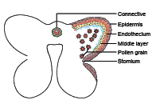
Aim:
To study and identify the given slide – T.S of Anther
Principle:
Androecium is made up of stamens. Each stamen possesses an anther and a filament.
Anther bears pollen grains which represent the male gametophyte.
Requirements:
Anther of Datura metel, glycerine, safranin, slide, cover slip, blade, brush, needle to prepare temporary slides, permanent slide of T.S. of mature anther and compound microscope.
Collect buds and opened flowers of Datura metel. Dissect the stamens, separate the anthers and take thin sections and observe the structure under the microscope. Record the various stages of anther from your observation.
Diagnostic Features
A mature anther is bilobed OPEN BRACKET dithecous CLOSE BRACKET and the two lobes are joined by a connective.
Each anther lobe has two pollen chambers in which pollen grains are produced.
A microsporangium or pollen sac is surrounded by four wall layers. They are epidermis endothecium, middle layers and tapetum.
Centre of the microsporangium OPEN BRACKET pollen sac CLOSE BRACKET is filled with haploid pollen grains.
Aim:
To study and identify the L.S. of an Angiospermic Ovule.
Principle:
In female reproductive part of a flower, the basal swollen part is ovary. The ovules are present inside the ovary, later they develops to seed.
Requirement:
Permanent slide of L.S. of Ovule, microscope
Diagnostic Features
Ovule or megasporangium is protected by one SLASH two coverings called integuments.
The stalk of the ovule is called funicle.
The point of attachment of funicle to the body of the ovule is known as hilum.
The body of the ovule is made up of a central mass of parenchymatous tissue called nucellus.
The integuments form a pore called micropyle and the region opposite to the micropyle is called as chalaza.
The nucellus has a large, oval, sac like structure towards the micropylar end called embryo sac.
A mature ovule, has 8 nuclei in its embryo sac.
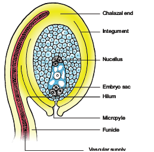
Aim:
To observe and understand the xerophytic adaptations found in Nerium leaves for living in dry or xeric habitat.
Principle:
The plants which are living in dry or xeric condition are known as Xerophytes.
Requirements:
Nerium leaf, few pieces of carrot SLASH pith SLASH styrofoam, blade, brush, needle, compound microscope, glycerine, coverslip, wash glass, microslide, saffranin solution, petri dish, etc.
Diagnostic Features
Presence of multilayered epidermis with thick cuticle.
Sunken stomata are present only in the lower epidermis.
Mesophyll is well differentiated into palisade and spongy parenchyma.
Mechanical tissues are well developed.
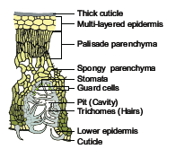
Start cutting transverse sections of Nerium leaf placing it in between a piece of carrot. Select the thinnest section of the material with the help of a delicate brush. Take a clean watch glass with water, transfer thin sections of the material. Put a few drops of safranin stain in the watch glass with water. Leave it for 3-5 minutes. Drain off stain and wash with water if necessary. Put the thinnest section in the centre of the slide. Put a drop of glycerine over the material. Cover it with a coverslip with the help of needle. Observe it under a compound microscope.
Aim:
To study the adaptations in flowers for pollination by different agents OPEN BRACKET wind and insects CLOSE BRACKET
Principle:
The process of transfer of pollen grains from the anther to stigma of a flower is called pollination.
Requirements:
Fresh flowers of maize or any other cereal SLASH gram, any insect pollination flowers like Salvia, Calotropis, Ocimum and Asteraceae flowers.
Place the given flower on a slide and observe it with the help of hand lens. Note down the
adaptations of the flowers meant for pollination by the external agents.
Diagnostic Features
The flowers are small, inconspicuous, colourless, odourless and nectarless.
Anthers and stigmas are commonly exerted.
Pollen grains are light, small, powdery and produced in large numbers.
The stigmas are large, sometimes feathery and branched adapted to catch the pollens.
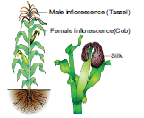
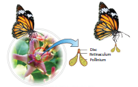
Diagnostic Features
The flowers are showy, brightly coloured and scented.
The flowers produce nectar or edible pollen.
Anthers and stigmas are commonly inserted.
Stigmas are usually unbranched and flat or lobed.
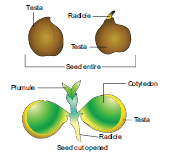
Figure 5: Dicot seed – Gram OPEN BRACKET Cicer CLOSE BRACKET
Aim:
To study and identify the Dicot seed
Principle:
The fertilized ovule is called seed and possesses an embryo, endosperm and a protective coat.
Seeds may be endospermous or non endospermous.
Requirements:
Chick pea, bowl, water Soak the seeds of chick pea or gram in water for 2 – 3 hours. Drain the water and place the seeds in a moist cotton cloth for 2 – 3 days. Observe for germination. Select some sprouted seeds, observe under a dissection microscope and record the parts.
Diagnostic Features
Seeds of gram have two cotyledons and an embryonal axis.
Each seed is covered by two seed coats OPEN BRACKET a CLOSE BRACKET Testa – outer coat and OPEN BRACKET b CLOSE BRACKET Tegmen – inner coat.
The embryonal axis consists of radicle and plumule.
The portion of the embryonal axis above the level of cotyledons is called epicotyl. It terminates into the plumule.
The portion of the embryonal axis below the level of cotyledons is called hypocotyl. It terminates into the radicle or root tip.
Aim:
To study and identify the features of cloning vector – pBR 322
Principle:
Vectors are used as carriers to deliver the desired foreign DNA into a host cell.
Requirements:
ModelsSLASH Photographs SLASH Pictures of E.coli Cloning vector pBR 322.
Diagnostic Features
pBR 322 plasmid is a reconstructed plasmid containing 4361 base pairs and most widely used as cloning vector.
In pBR, p denotes plasmid and B and R respectively the notes of scientists Boliver and Rodriguez who developed the plasmid. The number 322 is the number of plasmids developed from their
laboratory.
It contains two different antibiotic resistance genes and recognition site for several restriction enzymes OPEN BRACKET Hind III, Eco R I, Bam H I, Sal I, Pvu II, Pst I, Cla I CLOSE BRACKET, Ori and antibiotic resistance genes OPEN BRACKET ampR and tetR CLOSE BRACKET. Rop codes for the proteins involved in the replication of the plasmid.
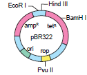
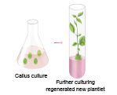
Aim:
To study and identify the Callus with plantlets.
Principle:
Growing the plant cells, tissues and organs in an artificial, synthetic medium under controlled conditions is called plant tissue culture. The technique of cloning plant is easier than animals because plant cells are simple in structure and most plant cells shows totipotency OPEN BRACKET i.e CLOSE BRACKET ability to regenerate from cells.
Requirements:
Model SLASH Photograph SLASH Picture of callus with plantlets.
Diagnostic Features
The callus is an unorganized mass of undifferentiated tissue.
The mechanism of callus formation is that auxin induce cell elongation and cytokinin induces cell
division as a result of which masses of cells are formed.
Roots and shoots are differentiated from the callus.
Aim:
To study and identify the different types of ecological pyramids
Principle:
The relationship between different trophic levels in an ecosystem when shown diagrammatically appear as ‘ecological pyramids’. In these ecological pyramids, the successive tiers represent successive trophic levels towards the apex. The base of the pyramid is of producers, the next one above it is of herbivores and the top tiers are of carnivores. The top most or apex represents the tertiary or top level consumers.
Requirements:
Models SLASH Photographs SLASH Pictures of different types of ecological pyramid.
Diagnostic Features
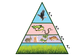
Figure 8 a: Pyramid of numbers in grassland ecosystem
The number of organism that are present in successive trophic levels of an ecosystem is shown in the pyramid of numbers of a grassland ecosystem.
There is a gradual decrease in the number of organisms in each trophic level from producers to primary consumers, then to secondary consumer, and finally to tertiary consumers.
Therefore, pyramid of number in grassland ecosystem is always upright.
T1 - Producers
T2 - Herbivores
T3 - Secondary consumers
T4 - Tertiary consumers
Diagnostic Features
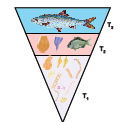
Figure 8 b: Pyramid of biomass in aquatic ecosystem
Pyramid of biomass represents the total biomass or standing crop OPEN BRACKET dry weight CLOSE BRACKET of organisms in each trophic level at a particular time.
In aquatic ecosystem, the bottom of the pyramid is occupied by the producers, which comprises very small organisms OPEN BRACKET algae and phytoplanktons CLOSE BRACKET possessing the least biomass and so the value
gradually increases towards the tip of the pyramid.
Therefore, here the pyramid of biomass is always inverted in shape.
T1 - Producers
T2 - Herbivores
T3 - Secondary consumers
Diagnostic Features
Pyramid of energy represents the number of joules transferred from one trophic level to next.
The bottom of the pyramid of energy is occupied by the producers. There is a gradual decrease in energy transfer at successive trophic levels from producers to the upper levels.
Therefore pyramid of energy is always upright.
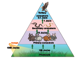
Figure 8 c: Pyramid of Energy
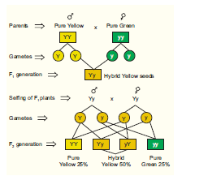
Figure 9 : Monohybrid cross
NOTE:
Student have to work in pairs to perform this experiment and record the data in the observation and record note book with the help of the teacher.
Need not consider this Monohybrid cross experiment for Board Practical Examination.
Aim:
To verify Mendel’s Monohybrid cross.
Principle:
When two purelines with contrasting traits of a particular character OPEN BRACKET phenotype CLOSE BRACKET are crossed to produce the next generation OPEN BRACKET F1 generation CLOSE BRACKET, all the members of the progeny are of only one phenotype, That is of one of the two parents. The phenotype that appears is called dominant and the one that does not appear is called recessive. When the F1 plants are selfed, the progeny That is the F2 generation, is in the ratio of 3 dominant is to 1 recessive OPEN BRACKET 3 divided by 4 is to 1 divided by 4 of 75 percentage is to 25 percentage CLOSE BRACKET. This reappearance of the recessive phenotype in F2 generation, verifies Mendel’s Monohybrid cross.
Requirements:
64 yellow and 64 green plastic beads, all of exactly same shape and size OPEN BRACKET when beads are not available, pea seeds may be painted and used CLOSE BRACKET. Plastic beakers, petri dish and a napkin SLASH hand towel.
Procedure
Make the student to work in pairs to perform the experiment. Follow the steps in given sequence.
1. Put 64 yellow beads in one beaker and 64 green beads in the other to represent male and female
gametes respectively. Let the yellow bead be indicated by ‘Y’ and the green bead by ‘y’
2. Take a bead from each container and place them together OPEN BRACKET it represents fertilization CLOSE BRACKET on the hand
towel spread before you on the table.
3. Just like the previous step, continue to pick beads and arrange them in pairs. Thus 64 pairs of beads are obtained representing the 64 heterozygous F1 progeny.
4. Put 32 F1 progeny in one petridish and the remaining 32 in another petridish OPEN BRACKET representing the F1 males and females CLOSE BRACKET.
5. To obtain the F2 generation, the student should withdraw one bead from one beaker labelled male and one from the other beaker labelled female keeping his SLASH her eyes closed OPEN BRACKET to ensure randomness CLOSE BRACKET and put them together on the hand towel spread over the table. Continue this process till all the beads are paired. Thus 64 offsprings of F2 progeny are obtained.
6. Note the genotype OPEN BRACKET capital Y capital Y or capital Y small y or small y small y CLOSE BRACKET of each pair and their possible phenotype.
7. Pool all the data and calculate the genotypic and phenotypic ratios.
Observation:
Record the result in the following table:
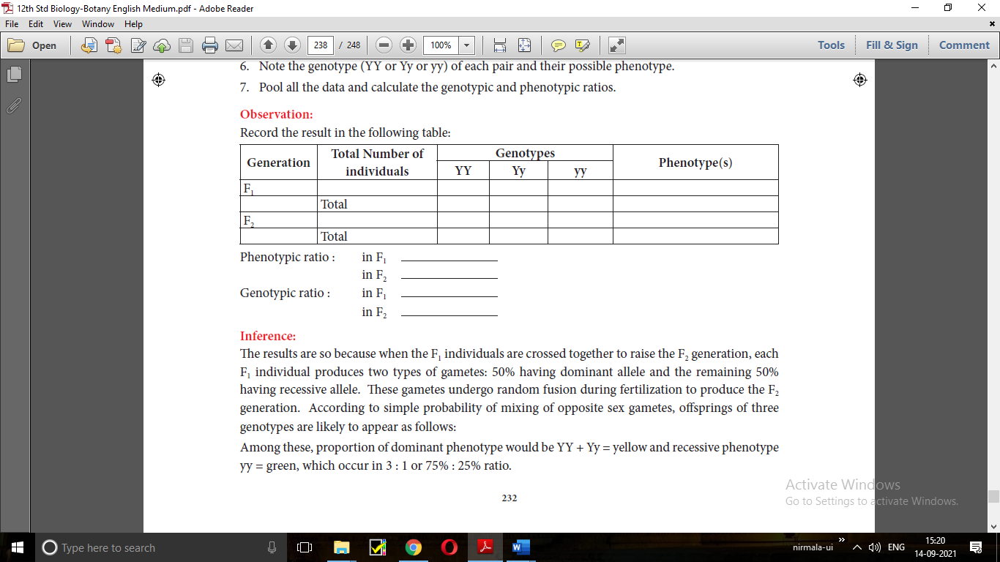
Phenotypic ratio : in F1 DASH
in F2 DASH
Genotypic ratio : in F1 DASH
in F2 DASH
Inference:
The results are so because when the F1 individuals are crossed together to raise the F2 generation, each F1 individual produces two types of gametes: 50 percentage having dominant allele and the remaining 50 percentage having recessive allele. These gametes undergo random fusion during fertilization to produce the F2 generation. According to simple probability of mixing of opposite sex gametes, offsprings of three genotypes are likely to appear as follows:
Among these, proportion of dominant phenotype would be YY plus Yy IS EQUAL TO yellow and recessive phenotype yy IS EQUAL TO green, which occur in 3 : 1 or 75 percentage 25 percentage ratio.
This ratio of 3 :1 in the F2 suggests that the hybrids or heterozygotes of F1 generation have two
contrasting factors or alleles of dominant and recessive type. These factors, though remain together
for a long time, do not contaminate or mix with each other. They separate or segregate at the time of gamete formation so that a gamete carries only one factor, either dominat or recessive.
Precautions:
1. Take a sufficiently large number of seeds for analysis to minimise the error.
2. Observe the contrasting form of trait carefully.
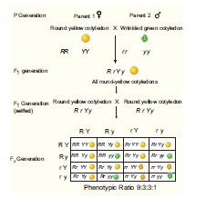
Figure 10 : Dihybrid cross
Aim:
To analyse seed sample of pea for Mendelian dihybrid ratio of 9 : 3 : 3 : 1.
Principle:
In a dihyrbid cross, the segregation of one gene pair is independent of the segregation of the other pair. It means that when the factors OPEN BRACKET genes CLOSE BRACKET for different characters inherited from parents do not remain linked in the offsprings, but their distribution in the gametes and in the progeny of subsequent generations is independent of each other.
Requirement:
Plastic beakers, Pea seed samples or plastic beads, tray, petri dishes, notebook, pencil SLASH pen.
Teachers should select the Pea seed or plastic beads which represents the four types of traits such
as yellow round, yellow wrinkled, green round and green wrinkled in the ratio of 9:3:3:1
Procedure:
1. Take a lot of about 160 Pea seeds or plastic beads in a tray.
2. Separate out yellow round, yellow wrinkled, green round and green wrinkled and put them in
separate petridishes.
3. Note down the number of seeds in each plate and find out their approximate ratio.
Observation:
Present your finding in the form of a table.
Total Number of seeds observed |
No. of yellow round seeds |
No. of yellow wrinkled seeds |
No. of green round seeds |
No. of green wrinkled seeds |
Approximate ratio
|
160 |
90 |
30 |
30 |
10 |
9:3:3:1 |
Inference:
The ratio of yellow round yellow wrinkled : Green round : green wrinkled is approximately 9 : 3 : 3 : 1 which is exactly the same as obtained by Mendel for a dihybrid cross. This indicates that the contrasting genes for seed colour and seed shape show an independent assortment in the population of pea seeds.
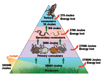
Figure 11: Ten percent law
Aim:
To understand the unidirectional flow of energy in an ecosystem and transfer of energy follows the
10 percentage law.
Principle:
The student studies about flow of energy and that only about 10 percentage of energy is made available to the next trophic level. Large amount of energy about 90 percentage is lost at each trophic level in a food chain.
Requirements:
Problems to be given to students based on different examples with alternating food chain and amount of energy.
The teacher must train the student by giving them various kinds of food chain with different
values.
Problem
Analyse the food chain given below and find out the amount of energy received by the organism in
third trophic level.
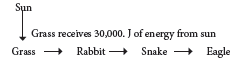
Given: The amount of energy in the producers, i.e. grass IS EQUAL TO 30,000 J.
Solution:
T1 – Grass OPEN BRACKET Producer CLOSE BRACKET IS EQUAL TO 30000 J of energy
T2 – Rabbit OPEN BRACKET Primary Consumer CLOSE BRACKET IS EQUAL TO
T3 – Snake OPEN BRACKET Secondary Consumer CLOSE BRACKET IS EQUAL TO
According to the ten percent law, during the transfer of energy, only about 10 percentage of the energy flows
from each trophic level to the next lower trophic level. So 10 percentage of energy from T1 gets
transferred to T2
So T2 Rabbit OPEN BRACKET primary consumer CLOSE BRACKET receives 30000 into 10 by 100 IS EQUAL TO 3000 J
Similarly, 10 percentage of energy from T2 gets transferred to T3
So T3 – Snake OPEN BRACKET Secondary consumer CLOSE BRACKET receives 3000 into 10 by 100 IS EQUAL TO 300 J
Answer:
1. The third tropic level T3 – OPEN BRACKET Snake CLOSE BRACKET receives 300 J of energy.
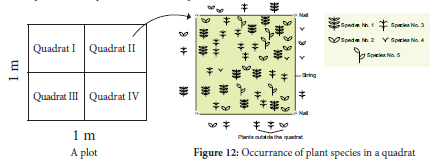
NOTE:
Teachers can take the students to open space and teach them how to construct plotSLASH
quadrats and to record the number of individuals of each plant species occurring in the quadrat.
The percentage frequency should be calculated and entered in the practical observation and
record note book. Examiner need not consider this experiment for Board Practical Examinations.
Aim:
To study population density and percentage frequency of different plant species of a given area by
quadrat method.
Principle:
The number of individuals in a population never remains constant. It may increase or decrease due
to many factors like birth rate, death rate, migration, etc. The number of individuals of a species
presents per unit area or space of a given time is called population density. The population density
and percentage frequency of different plant species can be determined by laying quadrats SLASH segments of suitable size and recording of the number of individuals of each species occurring in the quadrat.
Requirements:
Metre scale, string or cord, hammer, nails, paper, pencil, etc.
Procedure:
1. In the selected site of study, hammer the nails firmly in the soil without damaging the vegetation.
2. Fix four nails to make a square plot.
3. Tie each end of the nails using a thread, to make 1 m into 1 m plot.
4. If the number of plants in the plot is large, the plot can be divided into quadrats.
5. Count the number of individuals of a species “A” present in the first quadrat and record the data
in the table.
6. Similarly count the individuals of the species “A” in other quadrats respectively and record the data in the table.
7. Count the number of individuals of a species “B” present in the all quadrats and record the data
in the table.
8. Repeat the same procedure for other species and record the data in the table.
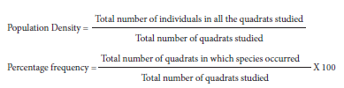
Observation and Inference:
Different plant species, their population density and percentage frequency occurring in a given area.
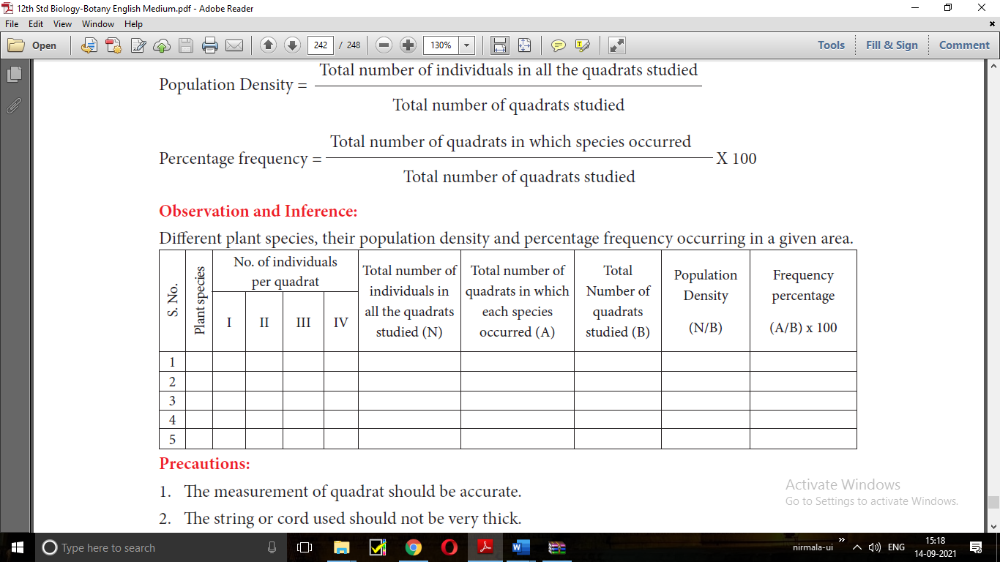
Precautions:
1. The measurement of quadrat should be accurate.
2. The string or cord used should not be very thick.
Problem:
Given below is the representation of a kind of chromosomal aberration such as deletion, duplication
and inversion. Identify and give reasons for identification. Also mentions its significance.
Aim:
To understand the abnormality in the chromosomal structure in an organism.
Principle:
To study about the chromosomal aberration which can occur due to ionizing radiations or chemicals.
On the basis of breaks and reunions in the chromosomal segment different types of aberrations can
be recognized.
Requirements:
Copper wire, Alphabets marked OPEN BRACKET A to H CLOSE BRACKET yellow colour beads denotes gene, and red colour bead
without alphabet denote centromere. Using this materials make different kinds of chromosomal
segments with specific gene sequence, that can be given to the students and asked to analyse the
aberration involved in it.
Procedure:
1. Make a normal chromosome model using copper wire and yellow beads and place it on the table.
In the model chromosome with gene sequence A to H, along with centromere OPEN BRACKET red bead CLOSE BRACKET.
2. For Deletion - Give yellow colour beads without one or more marked alphabets A to H OPEN BRACKET The lack
of any one or more beads denotes deletion type of chromosomal aberration CLOSE BRACKET.
3. For Duplication – Give yellow colour beads with addition of one or more marked alphabets A to
H OPEN BRACKET The repetition of one or more beads denotes duplication type of chromosomal aberration CLOSE BRACKET.
4. For Inversion – Give yellow colour beads which marked alphabets from A to H as in normal
chromosome. OPEN BRACKET There is no addition or deletion of beads OPEN BRACKET A to H CLOSE BRACKET given, so the students can construct the inverted segment of the chromosome using the given beads CLOSE BRACKET.
Based on the type of beads given the student has to identify and construct the relevant chromosomal aberration.
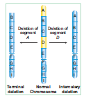
Figure: 13 a: Deletion
Reasons:
1. The deletion of the chromosomal segement A and D. OPEN BRACKET Refer figure 13a CLOSE BRACKET
2. When there is a loss of a segment of the genetic material in a chromosome it is called deletion.
Significance:
Most of the deletions lead to death of an organism.
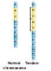
Figure 13 b:Duplication
Reasons:
1. When a segment of a chromosome is present more than once in a chromosome, then it is called duplication OPEN BRACKET Tandem duplication CLOSE BRACKET
2. The order of the genes in a chromosome is A, B, C, D, E, F, G, H and I. Due to aberration, the genes B and C are duplicated and the sequence of genes becomes A, B, C, B, C, D, E, F, G, H and I.
OPEN BRACKET Refer figure 13b CLOSE BRACKET
Significance:
Some duplications are useful in the evolution of the organism.
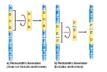
Figure: 13 c: Inversion
Problem:
Given below is the representation of a kind of chromosomal aberration. Identify it giving reasons for your identification. Also mentions its significance.
Identification:
The given genetic problem is identified as inversion type of chromosomal aberration.
Reasons:
1. When the order of genes in a chromosomal segment is reversed due to rotation by an angle of 180°, it is called inversion.
2. The order of genes in a chromosome is A, B, C, D, E, F, G, H and I. Due to aberration, the sequence
of genes become A, D, C, B, E, F, G, H and I OPEN BRACKET Refer figure 13c CLOSE BRACKET
Significance:
Sometimes inversion is responsible for evolution of the organism.
NOTE:
Likewise the teacher can give different types of chromosomal aberrations with various
gene sequence to students for practise. The external examiner can also use the same technique
by giving different gene sequence.
Aim:
To understand the frequency of recombination between the gene pairs on the same chromosome.
Principle:
To analyse the relative distance between the various genes and map their position in the chromosome, which is called genetic or linkage maps.
Requirements:
Different kinds of linkage SLASH genetic maps can be constructed by giving the students the relative distance between the linked genes of a chromosome. A diagrammatic representation can be drawn showing the location and arrangement of genes and their relative distance between them.
Solve the Problem Problem:
There are three linked genes A, B and C in a chromosome. Percentage of crossing over
OPEN BRACKET Recombination frequency CLOSE BRACKET between A and B is 20, B and C is 28 and A and C is 8. What is the
sequence of genes on the linkage map QUESTION MARK
Given:
Percentage of crossing over between the 3 linked genes A – B IS EQUAL TO 20 percentage, B – C IS EQUAL TO 28 percentage
and A – C IS EQUAL TO 8 percentage.
Solution
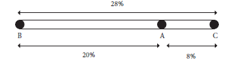
Figure 14: Linkage Map
Reasons:
1. The frequency of crossing over is directly proportional to the relative distance of the genes on the
chromosomes.
2. More crossing over IS EQUAL TO More distance between two genes and
Less crossing over IS EQUAL TO Less distance between the two genes.
In the above problem, the sequence of the genes on the linkage map is B, A, C
NOTE:
Teachers can give different crossing over percentage between its linked genes in a
chromosome and make the students construct the linkage maps. The external examiner can
also do the same for the Board Practical Examinations.
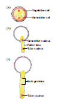
Figure 15: Pollen germination
NOTE:
Pollen germination can be studied by dusting some pollens from common flowers like
Crotalaria, Hibiscus, Pisum, etc. on a glass slide containing a drop of 10 percentage sugar solution or tender
coconut water or any nutrient medium.
Observe the slide after about 10 to 15 minutes under the low power of compound microscope. You will be able to observe the pollen tubes coming out of the pollen grains.
Aim:
To study the pollen germination on a slide.
Requirements:
Fresh seasonal flowers, cavity slide, cover slip, compound microscope, sucrose, boric acid, distilled water, beakers, etc.
Procedure:
1. Prepare a nutrient solution by dissolving 1 gm. of sucrose SLASH 1 gm. of boric acid in 100 ml. of distilled water.
2. Take a clean cavity slide and put a few drops of nutrient solution in the cavity of the slide.
3. Dust a few pollen grains from the stamen of a mature flower on it.
4. View the slide in the microscope after 5 minutes and then observe it regularly for about half an hour.
Observation:
In nutrient medium, the pollen grains germinate. The tube cell enlarges and comes out of the pollen grain through one of the germ pores to form a pollen tube. The tube nucleus descends to the tip of the pollen tube. The generative cell also passes into it. It soon divides into two male gametes.
Inference:
Different stages of germinating pollens are observed. Some pollens are in their initial
stage of germination while others have quite long pollen tube containing tube nucleus and two
male gametes.
Precautions:
1. Flowers should be freshly plucked.
2. Use clean cavity slide to observe the pollen grains.
3. The slides should not be disturbed, otherwise position of pollen grains will get changed.
Figure 16: Study of pH of different types of soil
Some nutrients become toxic in higher concentration. Therefore pH of the soil is an important
chemical property of the soil. Plants thrive well in neutral or slightly acidic soils. The pH of the
soil determines the types of soil organisms and also controls the solubility of different nutrients.
The pH of soil ranges from 0 to 14.
a. pH level 7 - Neutral soil
b. pH level below 7 - Acidic soil
c. pH level above 7 - Alkaline soil
d. Optimum pH for plant growth ranges from 5.5 to 7.
Most plants thrive best in neutral pH. Slight acidity favours tree growth and forms forests.
Slight alkalinity is favourable for grasses and legume crops.
Aim:
To study pH of different types of soil.
Requirements:
Soil samples OPEN BRACKET from two different sites such as crop soil, garden soil, roadside soil, pond soil, river bank soil CLOSE BRACKET, test tubes, funnel, filter papers, pH papers of different range, distilled water, beaker.
Procedure:
Dissolve one tablespoon or 1 gram of soil from each soil sample in 100 ml of distilled water in separate beakers. Stir the solutions well and keep aside for half an hour to settle down the suspended particles. Filter off each solution separately in different test tubes. Dip a small piece of broad range pH paper on each of the solution. Match the colour of the pH paper with the colour scale given on the pH paper booklet. This gives an approximate pH.
Observation:
Record the pH of different soil samples in the observation table.
S. No. |
Soil sample |
pH Value |
1 |
|
|
2 |
|
|
3 |
|
|
Inference:
Thus the pH value of different soil samples required for plant growth can be determined.
Precautions:
1. Wash the glassware thoroughly and get it dried before the experiment.
2. Dry the pH papers before comparing the colour with the colour scale.
3. Match the colour carefully and determine pH accurately.
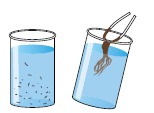
Figure 22: Isolation of DNA
DNA is one of the nucleic acids found in living systems. DNA acts as the genetic material in most of the organisms.
Principle:
Recombinant DNA technology has allowed breeders to introduce foreign DNA in other organisms including bacteria, yeast, plants and animals. Such organisms are called Genetically Modified Organisms OPEN BRACKET GMOs CLOSE BRACKET. Thus rDNA technology involves isolation of DNA from a variety of sources and formation of new combination of DNA.
Aim:
To isolate DNA from available plant materials such as spinach leaves, fresh green pea seeds,
green papaya, etc.
Requirements:
Plant materials, mortar and pestle, beakers, test tubes, ethanol, etc.
Procedure:
Take a small amount of plant material and grind it in a mortar with a little amount of water and
sodium chloride. Make it into a solution and filter it. To this filterate, add liquid soap solution or any detergent solution and mix it with a glass rod. Then tilt the test tube and add chilled ethanol and leave it aside in the stand. After half-an-hour we can observe the precipitated DNA as fine threads. DNA that separates can be removed by spooling
Observation:
DNA appears as white precipitate of very fine threads on the spool.
Inference:
Thus DNA can be isolated from the plant cell nucleus by this technique.
Precautions:
1. All the glasswares must be thoroughly cleaned and dried.
2. The chemicals used for the experiments must be of standard quality.
3. If ordinary ethanol is used, the time duration for obtaining precipitated DNA may extend further.
Serial number |
Identification OPEN BRACKET Product name CLOSE BRACKET |
Botanical Name |
Useful parts |
Uses |
|
SesameSLASH Gingelly oil |
Sesamum indicum |
Seeds |
1. Sesame oil is mostly used for culinary purposes. 2. Lower grades are used in manufacture of soaps, in paint industries, as a lubricant and as an illuminant. |
|
Rubber |
Hevea brasiliensis |
Latex |
1. Rubber is used in the manufacture of footwear, wire and cable insulations, rain coat, sports goods, erasers, adhesives, rubber bands, household and hospital goods and shock absorbers. 2. Concentrated latex is used for making gloves and balloons. 3. Foamed latex is used in the manufacture of cushions, pillows and life-belts. |
|
Flaked Rice OPEN BRACKET Aval CLOSE BRACKET |
Oryza sativa |
Seeds |
1. Flaked rice OPEN BRACKET aval CLOSE BRACKET is used as breakfast cereal or as snacks. |
|
Henna Powder |
Lawsonia inermis |
Leaves |
1. An orange dye “henna” obtained from leaves and young shoots is used to dye skin, hair and fingernails. 2. It is also used for colouring leather, tails of horses and hair. |
|
Aloe Gel |
Aloe vera |
Leaves |
1. Aloe gel is used as skin tonic. 2. Because of its cooling effect and moisturizing characteristics, it is used in the preparation of creams, lotions, shampoos, shaving creams and allied products. 3. It is used in gerontological applications for rejuvenation of ageing skin. |
Reviewers
Dr. K. V. Krishnamurthy,
Professor and Head OPEN BRACKET Retd. CLOSE BRACKET Bharathidasan University, Trichy
Dr. S. Palaniappan,
Principal OPEN BRACKET Retd. CLOSE BRACKET, Govt. Arts College for Men OPEN BRACKET A CLOSE BRACKET, Nandanam, Chennai Domain Experts
Dr. M.N. Abubacker,
Associate Professor & Head, PG and Research Department of Biotechnology,
National College OPEN BRACKET A CLOSE BRACKET, Tiruchy
Dr. S.S. Rathinakumar,
Principal OPEN BRACKET Retd. CLOSE BRACKET, Sri Subramania Swamy Government Arts College , Thiruthani
Dr. D. Narashiman,
Professor and Head OPEN BRACKET Retd. CLOSE BRACKET Plant Biology & Biotechnology, MCC College
Tambaram, Kancheepuram
Dr. K.P. Girivasan,
Associate Professor of Botany, Govt. Arts & Science College, Nandanam, Chennai
Dr. C.V. Chitti Babu,
Associate Professor of Botany, Presidency College, Chennai
Dr. Renu Edwin,
Associate Professor of Botany, Presidency College, Chennai Academic Coordinators
K. Manjula,
Lecturer in Botany, DIET, Triplicane, Chennai.
J.Radhamani,
Lecturer in Botany, DIET, Kaliyampoondi, Kancheepuram
V. Kokiladevi,
PGT Botany, GHSS, Sunnambukulan, Thiruvallur. Illustration
A. Jeyaseelan,
Art Teacher GBHSS, Uthangarai, Krishnagiri.
S. Gopu
Gopu Rasuvel
Santhana Krishnan Art and Design Team Layout
Santhiyavu Stephen S
Balaji
Prasanth C
Pakkiri
In-House
QC - Arun Kamaraj Palanisamy - Rajesh Thangappan
Wrapper Design
Kathir Aarumugam
Co-ordination
Ramesh Munisamy
Typist
S. Chitra,
SCERT, Chennai Authors
P. Saravanakumaran,
PG Assistant in Botany, GHSS, Koduvalarpatti, Theni.
P. Anandhimala,
PG Assistant in Botany, GGHSSS, Pochampalli, Krishnagiri.
M.V. Vasudevan,
PG Assistant in Botany, Adhiyaman GBHSS, Dharmapuri
J. Mani,
PG Assistant in Botany, GHSS, R. Gobinathampatti, Dharmapuri.
G. Muthu,
PG Assistant in Botany, GHSS OPEN BRACKET ADW CLOSE BRACKET, Achampatti, Madurai.
G. Sathiyamoorthy,
PG Assistant in Botany, GHSS, Jayapuram, Tirupattur, Vellore.
T. Ramesh,
PG Assistant in Botany, GBHSS, Vettavalam, Thiruvannamalai
S. Malar Vizhi,
PG Assistant in Botany, GHSS, Chenbagaramanputhoor, Kanyakumari.
G. Bagyalakshmi,
PG Assistant in Botany, GGHSS, Jalagandapuram, Salem.
C. Kishore Kumar,
PG Assistant in Botany, GHSS, Thattaparai, Vellore.
Sathyawathi Sridhar,
PG Assistant in Botany, Sri Sankara Senior Secondary School, Adyar, Chennai.
M. Lakshmi,
PG Assistant in Botany, Sri Sankara Senior Secondary School, Adyar, Chennai.
M. Chamundeswari,
PG Assistant in Botany, Prince MHSS, Nanganallur, Kancheepuram.
D. Padma,
PG Assistant in Botany, Prince MHSS, Madipakkam, Chennai. OPEN BRACKET Author, Practicals CLOSE BRACKET Content Readers
Dr. T.S. Subha,
Associate Professor in Botany, Bharathi Womens College, Chennai.
Dr. P.T. Devarajan,
Associate Professor in Botany, Presidency College, Chennai
Dr. N. Pazhanisami,
Associate Professor in Botany, Govt. Arts College, Nandanam, Chennai
Dr. G. Rajalakshmi,
Associate Professor in Botany, Bharathi Womens College, Chennai.
Dr. R. Kavitha,
Associate Professor in Botany, Bharathi Womens College, Chennai OR Code Management Team
R. Jaganathan,
SGT, PUMS - Ganesapuram, Polur, Thiruvannamalai.
J.F. Paul Edwin Roy,
B.T.Assistant,
PUMS -Rakkipatty, Salem.
S. Albert Valavan Babu,
B.T.Assistant G.H.S, Perumal Kovil, Paramakudi, Ramanathapuram